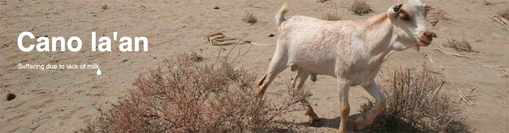
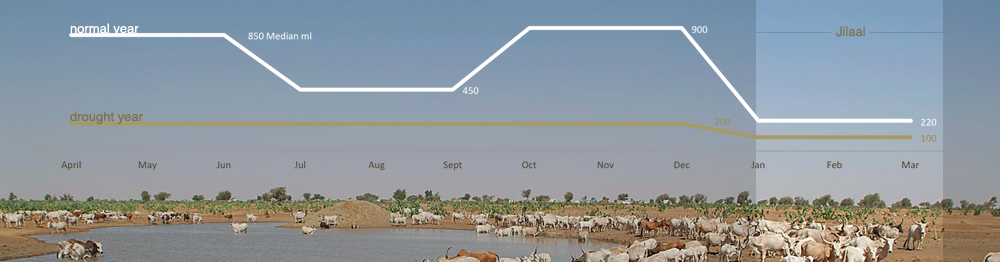
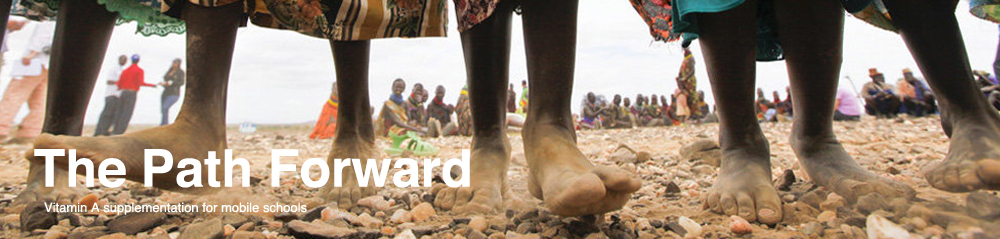
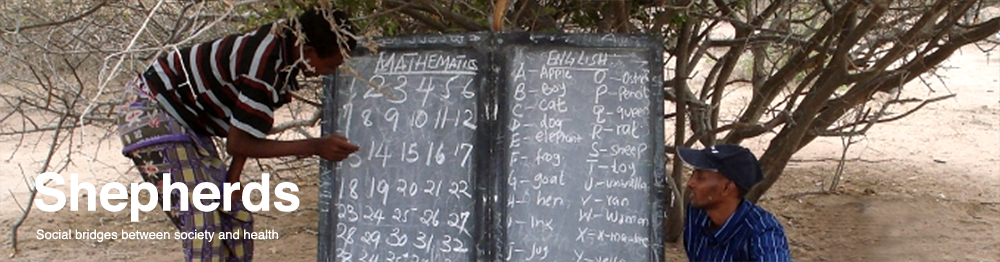
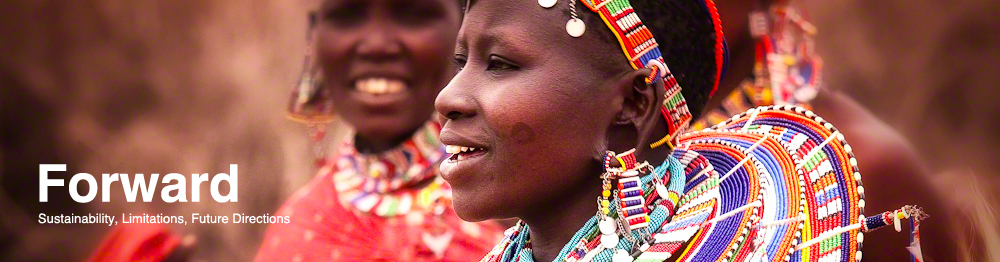

Nomadic Pastoralists pose an interesting challenge to the administration of public health – their populations are transient and oftentimes cross international borders as part of seasonal migration patterns. The stateless nature of nomadic groups often marginalizes them from the public administration of health more logistically situated for sedentary populations.
Ultimately, malnutrition in the form of acute vitamin A deficiencies is highly associated with both seasonal and drought patterns that affect the milk supply of accompanying livestock that provide a critical component of micronutrients. We outline the growing threat to micronutrient security nomadic pastoralists face in the Northeastern Pastoral Zone in Kenya, centered around the Wajir District amid the growing extremes in global climate and general unaccountability for those that do not conform to sedentary lifestyles.

"We like all milk. It satisfies hunger, we become strong and healthy and playful and happy. It is given to us during Gu and Deyr [the rainy seasons]. During Hagaa and Jilaal [the dry seasons] we get soor, tea with milk and ambula. When milk becomes less we get less playful and weak."
"Milk is reduced in everything during drought. We drink black tea and rice as a soup with chili. The name for shuro without milk is yaabis (dry), even though the taste of shuro changes without milk we have to eat it because sorghum is one of the cheapest flours."

"However, nomadic pastoralist retinol levels may be decreased during the dry season when milk consumption is reduced as a result of lower production and higher milk sales. In the study area, sufficient milk consumption, complemented by dietary fruits and green vegetables, could maintain adequate retinol status. It is crucial to implement a programme of food education emphasising the importance of animal based sources of vitamin A such as liver and milk, in addition to locally available products such as Spirulina or plant based products, despite the limited bioavailability of vitamin A precursors from fruits and vegetables. The results support an ecological linkage between human retinol level and livestock milk retinol."
-M. Bechir, E. Schelling, K. Kraemer, F. Schweigert, B. Bonfoh, L. Crump, M. Tanner, J. Zinsstag
As the price of food rises due to continuous drought conditions on the Horn of Africa, pastorialists are most at risk for micronutrient deficiencies due to an increased inability to purchase the balanced diets Bechir advocates above.

Objectives: Reduce seasonal acute micronutrient deficiencies as the result of decreased milk production during Jilaal. We aim to reduce the compounded cycle of deficiency and infection by targeting those most vulnerable during the appropriate months of Novemember to December.
Target Population: Nomadic pastoral children in USAID and UNESCO funded primary mobile school initiatives.
Intervention: High dose Vitamin A supplements of 200,000 IU prior to the Jilaal season in November coordinated between fixed health care services based on existing structures and a Dugsi or mobile school teacher selected by the community and trained by EMACK and NOHA. This dosing shcedule will last for 4 months (December-April) to offer a 30% protective effect against mortality.
Among mobile schools within the Northeastern Pastoral Region randomly selected to receive the intervention we will further select through randomization certain schools to recieve additional camels and goats for a factorial study design.
The inclusion of diversifying lifestock is introduced as a supplementary intervention to determine whether there is a significant effect on the long term nutritional status of children given the addition of livestock more resiliant to drought.

Implementation: Designating existing fixed structures as primary health care service medical posts to recieve, maintain, and distribute supplementation. Health teams will coordinate with Dugsi or mobile school teachers who are responsible for reporting the location and health needs of a 'Rer’ (a cluster of family units that live together under a headman) with a minimum of 10 households. Distribution of Vitamin A supplements will be coordinated with mobile school teachers who will serve as a medium between the nomadic tribes and health services. These fixed medical posts will also relieve the burdens of supplementation management and security often faced by traditional feeding schools.
Designating mobile school teachers, already familiar with their surrounding families, as "Shepherds" will facilitate better system of coverage that has often been too expensive for traditional mobile health units through local trust and serving as information relays.
Mobile Technologies for Mobile Schools
Given the recent mobile technology boom in Africa, where setting up landlines is both outdated and costly mobile schools should be equipped with relatively low cost gps systems and cellular phones to convey locations in situations where addresses don't exist. Through periodic 'check-ins', each fixed health center will be able to track which groups are currently within their range of service and ultimately which groups are scheduled for data sampling after our Vitamin A trial has expired.
Ultimately we promote a system where each operating group plays to their strengths. Health care units manage logistics and distributions while Shepherds serve as intermediaries and promoters of community trust and education. By delegating such responsibilities both serve in tandem to create a system of sustainable development in reaching affected populations without demanding conformation or change in lifestyles.

We aim to build a system to increase coverage in a demographic that has often been marginalized from society through cooperation with existing representatives that serve as effective mediators of health. While the root issues of micronutrient deficiency such as livestock maintenance, providing interventions for pregnant and nursing mothers have yet to be addressed we hope that building upon a sustainable foundation inherently linked to increased educational coverage will offer future promises.